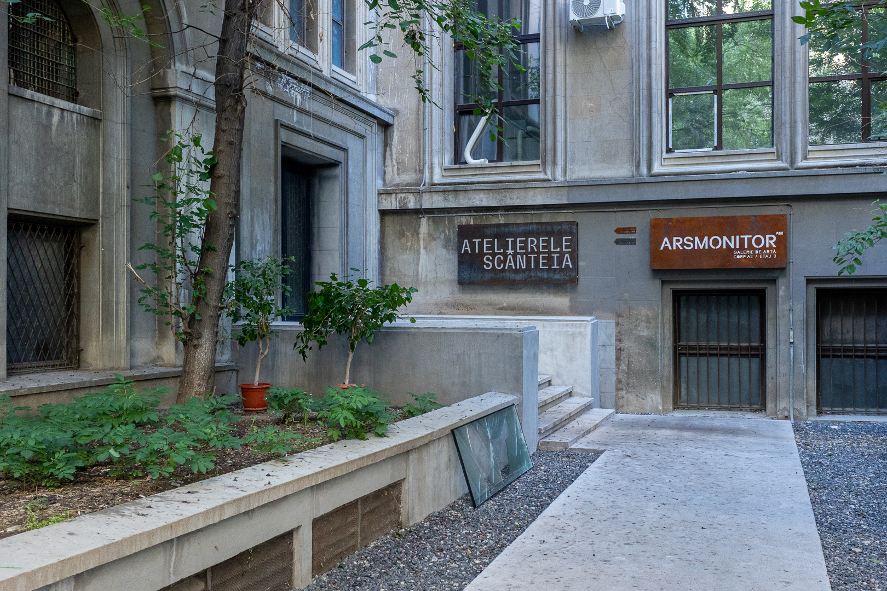
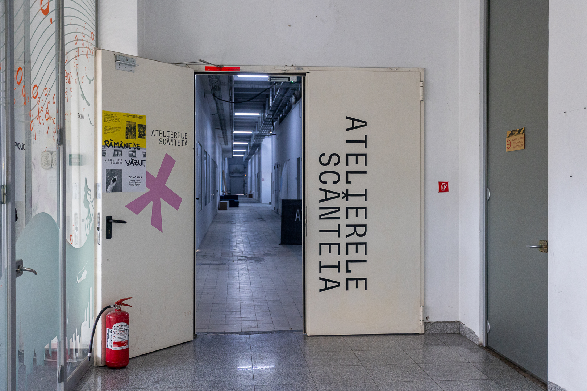
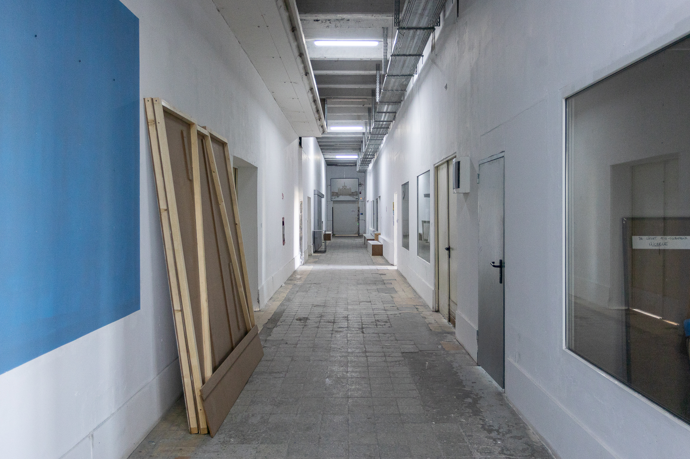
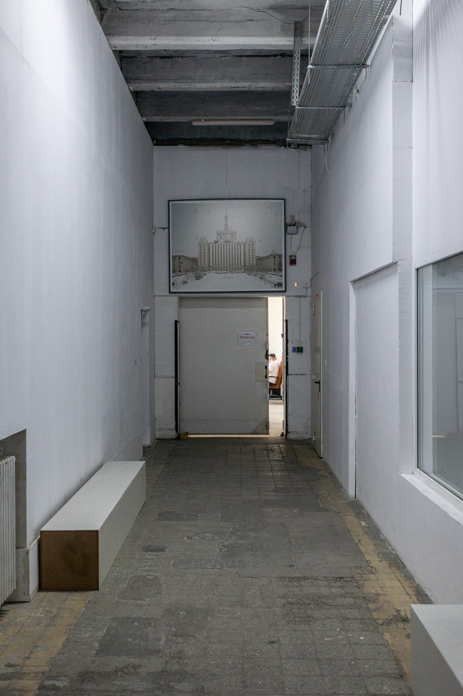
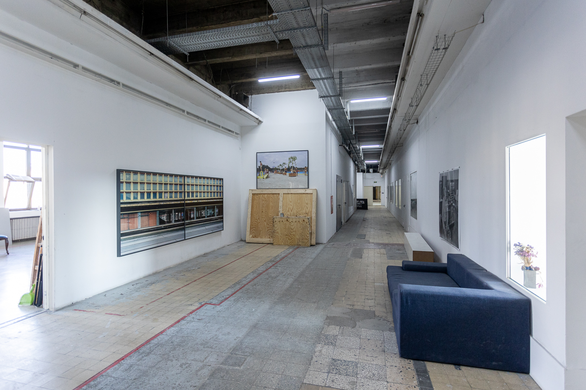

Casa Presei Libere este genul de loc pe care ne-am obișnuit să îl vedem doar din exterior - din autobuz, din mașină sau de la distanță. Până în 2007 a fost clasată drept cea mai înaltă structură din oraș. Întotdeauna te întrebi ce este acolo, ce se întâmplă în interiorul ei? Descinsă din arhitectura socialist realistă, Casa Scânteii a fost proiectată după chipul și asemănarea unor clădiri-emblemă pentru regimul socialist - Universitatea Lomonosov și Hotelul Leningrad din Moscova și Palatul Culturii și Științei din Varșovia. Clădirea a devenit o emblemă pentru București, dar, până de curând, nu a oferit publicului larg un pretext de a intra în dialoga cu ea. Inițiativa Atelierele Scânteia încearcă să schimbe regulile jocului și să aducă locuitorii mai aproape de acest loc, prin expozițiile și evenimentele organizate în corpul A2 al clădirii.
„Dacă treci prin gangul ăsta, pe lângă Sala de marmură, și rămâi în curtea interioară, la intrare o să vezi că scrie Ateliere Scânteia. Apoi urci scările și ajungi la lift. E cumva cea mai simplă variantă,” ne explică Vlad Albu, după ce ne-am rătăcit ca să ajungem la discuția cu el și Gia Țidorescu. La Atelierele Malmaison, aflate într-o altă clădire istorică care a fost, de-a lungul timpului, garnizoană, închisoare și judecătorie, întâlnești aceeași situație labirintică. Ambele sunt clădiri masive cu cotloane întortocheate. Vocația lor pare să fie de a te împiedica să ajungi simplu și direct la țintă.
Deși sunt multe autobuze care circulă până la Atelierele Scânteia, Gia spune că, din cauza distanței, majoritatea oamenilor se simt descurajați să vină până aici. Alternativa ar fi ca, atunci când organizează evenimente, să se grupeze cu alte spații culturale din zonă, cum ar fi Combinatul Fondului Plastic, un alt pol cultural construit la finalul anilor ‘60 și care reunește mai multe galerii și ateliere pentru artiști și artiste. „Când există o configurație mai mare, oamenii sunt mai tentați să facă un efort ca să iasă [din casă],” spune Gia.
Vlad locuiește pe la Ștefan cel Mare și ajunge la atelier destul de repede cu autobuzul sau cu bicicleta. Spune că vine cam trei zile pe săptămână. „M-am gândit că, dacă tot am un spațiu, să încerc să intru într-un ritm.” Gia s-a mutat din Cluj în București acum un an și jumătate și locuiește în cartierul Titan. De acasă și până la Ateliere face cam o oră și 20 de minute. Jumătate din săptămână merge la un job part-time, iar în a doua jumătate vine la Scânteia, unde fie lucrează la proiectele spațiului ei, Calciu Space, fie scrie articole, texte. „E liniște și mă descurc mult mai bine decât acasă.”
I-am întrebat dacă și în cel fel le-a fost influențată practica artistică de când s-au instalat la Atelierele Scânteia. „E foarte simplu să-ți vină mai multe idei când poți să le treci și prin filtrul unor oameni a căror practică o respecți,” spune Gia. Pentru Vlad e benefic faptul că are spațiu unde să experimenteze cu diferite tipuri de materialității. „E liniște, e lumină bună. Pleci de acasă cu gândul că o să intri în starea aia, fără să ți-o propui neapărat, și rămâi aici. Mai ieși afară la discuție la o cafea. E plăcut.”
Atelierele Scânteia reprezintă doar un mic segment din activitățile care se desfășoară în corpul A2 al clădirii. Multe dintre spațiile Casei Presei sunt încă necartografiate și inaccesibile, iar cele care sunt folosite compun un peisaj eclectic. În aripa unde activează artiștii mai găsești un studio de fotografie culinară, o sală de scrimă, o alta de dansuri și trei televiziuni: Metropola TV, finanțată cu bani publici și deținută de Florentin Pandele, primarul din Voluntari, Agro TV, despre care Vlad spune că nu sunt neapărat comunicativi, dar vin să vadă ce se întâmplă la evenimentele lor, și studioul Inedit TV, o televiziune unde când nu se vorbește despre politică, se difuzează muzică populară.
La deschiderea din septembrie 2023 a Atelierelor, au venit cei de la Metropola și le-au propus să facă un material despre spațiu, dar propunerea nu s-a materializat. „Nici nu știu dacă au insistat și nu știu dacă ne-am fi dorit neapărat,” spune Vlad. Tot atunci Gia a fost întrebată de Metropola despre cum reușesc artiștii să se auto-finanțeze. „Mai exact: voi din ce faceți bani?”. Gia le-a explicat că prin colaborări cu diferite instituții, finanțări publice nerambursabile, dar și prin vânzarea lucrărilor. Este important ca ceilalți să vadă că există și alte surse de finanțare decât salariul și să fie deschiși la a lucra pe proiecte punctuale, crede ea. „Oricât de mult aș fi încercat să explic, nu părea să atingă interlocutorul.”
Pentru televiziuni și nu numai, a fost un lucru bun că au apărut Atelierele. Înainte ca artiștii să înceapă renovarea spațiilor unde a funcționat mult timp o fabrică care producea CD-uri, zona aceea a clădirii era colonizată de porumbei, fiind neatinsă și lăsată în paragină de 5-7 ani. Majoritatea angajaților celor trei televiziuni erau nevoiți să traverseze holul pe atunci părăsit. În prezent, coridorul este un spațiu de tranzit îngrijit. Porumbeii care intrau până de curând prin ferestrele sparte nu s-au obișnuit însă cu faptul că fostul lor loc de adunare e acum locuit și continuă să intre pe unde mai apucă.
Editura Coresi, care a pus bazele industriei tipografice în România, funcționează în continuare în Casa Presei și deține latura clădirii unde se află Atelierele. „Directorul probabil crede că facem cu totul altceva decât facem. Adică are o altă impresie despre arta care se produce aici. Dar e mulțumit că sunt niște oameni din zona culturală care au ocupat spațiul și încearcă cumva să susțină ce se întâmplă aici,” spune Vlad. Tot de la el aflăm și că editura deține o arhivă instituțională de care se ocupă o doamnă arhivar. Acolo se găsesc toate ștatele de plată ale angajaților, imagini din 1956, când s-a deschis editura, și alte câteva sute de imagini, din anii ‘70-’80, cu portrete de muncitori.
Împreună cu alți artiști, Vlad și-a propus să scaneze arhiva și să facă o mică intervenție de ziua porților deschise a Atelierelor Scânteia, în toamna aceasta. „Vrem să deschidem arhiva pentru public. Trebuie să găsim exact formatul potrivit dacă vrem să multiplicăm materialele astfel încât oamenii să poată lua o parte din arhivă acasă. Vrem să creăm povești în jurul ei sau chiar să aflăm cu ajutorul oameniilor despre istoria locului, pentru a completa spațiile goale și a crea un dialog între public, noi și Coresi.”
După cum spuneam mai sus, a ajunge la Atelierele Scânteia din diverse zone ale Bucureștiului poate fi o aventură cronofagă. Prin urmare, odată ce ai ancorat la fața locului, nu îți mai permiți să pleci atât de ușor. Nu îți mai aranjezi întâlniri la prânz sau în vreo pauză de cafea. După ce cobori din autobuzul care te aduce la una din cele câteva stații ce flanchează colosul numit „Casa Presei”, îți asumi un fel de logodnă: „Când faci trei ore dus-întors până acasă, it's a commitment”, spune Gia apropo de programul ei. Îndepărtarea de casă și de centrul orașului are însă un efect anti-procrastinare. „Foarte multe chestii mă distrăgeau acasă. Aici reușesc să mă concentrez”, adaugă ea. Zona pare să funcționeze într-o dinamică destul de închisă, dar acest lucru nu este neapărat negativ pentru artiștii care își doresc o bulă de liniște. Atelierele sunt destul de izolate și în raport cu spațiul public. Perimetrul Casei Presei este destinat aproape exclusiv traficului și mașinilor. „De noi nu afli din stradă și apoi intri,” punctează Gia.
Fosta Casa Scânteii seamănă cu o insulă sau cu un vapor de croazieră: odată ce intri în clădire, malul, adică orașul, dispare. În interior, preferabil este să te lași asimilat de logica locului, fiindcă opțiunile sunt oricum foarte limitate. „La prânz trebuie să mergi foarte repede să-ți iei masă. Există niște locuri unde merg oamenii de la ANAF și de la alte instituții, dar dacă ajungi la unu jumate să-ți iei prânzul, nu prea mai găsești nimic”, ne explică Vlad. Cel mai bine e să vii cu „pachețelul la tine”. Cu alte cuvinte, fie îți sincronizezi ritmul corporal cu cel al celorlalți angajați din clădire, fie ești pe cont propriu, împrejurimile neavând mai nimic de oferit. Pe cât este de vastă, Casa Presei nu lasă momentan loc pentru prea multe divagări sau plăceri nenecesare. Monumentalitatea ei aproape că induce un fel de ascetism.
Atelierele Scânteia au fost amenajate în locul unei foste fabrici de CD-uri, iar configurația spațiilor a rămas, în mare, cea originală. Fiecare a intervenit atât cât i-a fost util. Atelierul lui Vlad era înainte, cel mai probabil, o cameră de depozitare, iar cel al Giei, continuarea camerei tehnice. „Eu mi-am dărâmat un zid, inițial erau două încăperi. Dar altfel, perimetral, [spațiul] a rămas cam cum l-am găsit”, își amintește Vlad.
Multe dintre ateliere au geamuri care dau în holul principal. Vlad are o astfel de fereastră chiar la intrare, lângă ușă. Cel mai des, lumea îi bate în geam mai degrabă decât la ușă pentru a-l saluta sau a-i face o vizită. Moștenire de la fabrica de CD-uri și perfect nenecesară, fereastra a devenit un element ludic pentru interacțiunile dintre el și alți artiști sau vizitatori. Dar există și o anume presiune în a fi privit. „De când am deschis vreau să îl întreb pe Vlad dacă așa ar arăta spațiul tău și dacă nu ar avea geam. Pentru că este atât de superb”, râde Gia. „Zilele trecute a fost dezastru aici pentru că am lucrat. Era praf, era mizerie, am tăiat faianță, erau cioburi. Ieri am făcut un pic curat. Nu mă rușinez să-l las cum o fi, e un spațiu de lucru. În același timp, m-a întrebat mai multă lume de ce nu-mi acopăr geamul ăsta. Știi, pentru că ține de o anume intimitate”, spune Vlad. În acest punct al discuției, ne-am gândit în secret că ar fi interesant să apară studii despre audience effect și în interacțiunile tipice comunităților artistice, nu numai în sport, competiții sau morală.
Monumentalitatea tipică arhitecturii realist-socialiste toarnă în beton un anumit tip de relație între stat și om. Chiar dacă nu mai există ziarul Scânteia, propaganda PCR, și nu mai suntem în dictatură, e încă dificil să nu resimți o distanță ireparabilă între tine și ceea ce a fost, vreme de ani buni, cea mai înaltă construcție din oraș. Când ajungi în proximitatea zidurilor de peste 90 de metri ale corpului central al Casei Presei, în fața ta, aproape de necuprins cu privirea, apare ceva cvasi-inuman. Sau, în orice caz, un spațiu care de la bun început îți spune „ești foarte mic”.
I-am întrebat pe Vlad și Gia cum resimt (dacă resimt) trecutul fostei Casa Scânteii și cum negociază cu spațiile atât de vaste din clădire. „Mi se pare că nu se simte trecutul acestei clădiri. Sau noi, cel puțin, nu cred că îl simțim. În afară de faptul că știi unde intri, știi ce a fost aici, îți dai seama de faptul că e o chestie monumentală, nu mi se pare că e o apăsare. Are un trecut, dar au muncit niște oameni aici”, spune Vlad. A ne orienta atenția către cei care au avut cândva locul de muncă într-una din cele 6000 de încăperi ale clădirii este consolator, readuce umanul în discuție.
Dar configurația spațială este greu de învins: mai nimic din clădire nu a fost proiectat ținându-se cont de scara umană. Gia ne spune că rezolvarea stă în relațiile cu ceilalți și în intimitatea creată în interiorul segmentului de etaj ocupat de Ateliere, „Cumva, tu te raportezi la ai tăi și nu mai simți [imensitatea locului]”.
Mai mult, spațiul în care se află Atelierele este modular, se desfășoară ca o secvență de 16 compartimente mai mari sau mai mici. Din fericire, segmentarea îmblânzește dimensiunile, mai ales pe orizontală, și lucrurile capătă un aspect mai omenesc.
Atelierul lui Vlad este minimalist, luminos și înalt, având în jur de 5 metri înălțime. La etajul de dedesubt, acolo unde se află secția de legătorie a tipografiei Coresi, tavanul se îndepărtează la peste 7 metri. Monumentalitatea clădirii începe să se facă resimțită și în interior. Ca suprafață, „spațiul [secției Coresi] e dublu față de cel de aici, e un open space în care mai vezi câțiva stâlpi de susținere. Vreo 20-30 de doamne lucrează acolo, într-un spațiu care în mod clar a fost destinat pentru mult mai mulți angajați. Acolo se simte lucrul ăsta, că totul e imens”. Cei câțiva oameni care lucrează la utilaje par risipiți printr-o încăpere absurd de mare pentru nevoile lor. Așa cum putem bănui, în urma proiectelor monumentaliste rămâne o doză zdravănă de risipă. Din păcate, aceasta nu poate fi reparată prin relații umane și solidaritate.
Am citit undeva că lungimea totală a coridoarelor din Casa Presei este de 3 km. Vlad și Gia ne-au spus că nu au explorat încă întreaga clădire și că, oricum, o mare parte din ea nu este folosită. Există deja un tipar în faptul că artiștii bucureșteni independenți își găsesc spații pentru ateliere și expoziții în locuri rămase în suspensie după căderea dictaturii ceaușiste: Atelierele Malmaison se află acolo unde, în comunism, se găsea o închisoare cu același nume; WASP a preluat o fostă hală industrială a fabricii Flaros; Make a Point găzduia evenimente artistice într-o hală a fostei fabrici de textile Postăvăria Română și în Turnul de Apă din curtea acesteia. Desigur, conversia patrimoniului industrial poate conduce și la apariția altor tipuri de venue-uri, un exemplu în acest sens fiind Halele Carol.
La Scânteia este loc pentru mai multe spații culturale, iar acest lucru ar aduce, cel mai probabil, mai mulți vizitatori și mai multe colaborări între artiști: „Dacă ar fi pe acest etaj, în clădire, și alte entități din zona artelor performative sau orice altceva din zona culturală, cu siguranță ar fi mai bine”, crede Vlad. În același corp cu Atelierele se mai află o galerie privată, ARSMONITOR, iar vestea bună este că, în curând, la parterul clădirii va fi inaugurat un al doilea spațiu independent ce va ține de Ateliere și va găzdui expoziții, concerte, performance-uri, etc: Scânteia +.
Gia ne-a povestit că spațiul gestionat de ea, dedicat tinerilor curatori, și-a găsit numele în urma unei sesiuni nocturne de brainstorming. „Calciu”, numele final, trimite la interesul ei pentru intersecția dintre arta contemporană și cercetări din domeniul biologiei, cât și la procesul de calcifiere al unui proiect artistic, la procesualitatea și drumul care duc la rezultatul final.
Dacă extrapolăm, ce se întâmplă în prezent la Atelierele Scânteia seamănă cu o calcifiere sau o sedimentare lentă și fragilă a unui proiect și a unei comunități. Din păcate, toate acestea se întâmplă (deocamdată) fără sprijinul politic și financiar al instituțiilor centrale ale statului.




